Ultimate Guitar has one of the biggest tab libraries on the web and an interface that's barely changed in two decades. I use the site, so the frustration was firsthand — and it made a good first target for taking a UX process all the way through on my own for the first time.
Context
Ultimate Guitar is where a lot of people go for guitar tabs and chords. It's been around for over two decades and it has a huge library, but the site itself has barely changed, and it shows. The interface is dated, and the features beyond the tabs themselves (Shots for playing videos, Courses, Forums) are easy to miss and confusing to use, especially if you're not particularly tech-comfortable.
I use the site, so the frustration was firsthand. The goal I set was to simplify how you move through it, cut the confusion, and make the non-tab features approachable enough that people would actually try them, so you spend your time learning music instead of fighting the website. I wanted to keep it recognizably Ultimate Guitar, just a version that isn't working against you.
This was a class project and the first time I took a UX process all the way through on my own, so part of the point was learning to run the methods, not just apply them.
Role
Solo project. I did the research, the evaluations, the personas and journey maps, the wireframes, the interface design, the prototype, and the final pitch.
Process
Evaluating what's already there. I started with a heuristic evaluation of Ultimate Guitar against Songsterr, a cleaner competitor, scoring the current site across Nielsen's ten usability heuristics (severity 1 = minor, 3 = major). The comparison made the gaps concrete: you can't tell where you are on the site, several flows dead-end with no clear way back, and it isn't obvious what's locked behind the paywall until you hit it.
| Heuristic | Sev | Finding & recommendation |
|---|---|---|
| 01Visibility of system status | 2 | Tab transitions are quick, but it's hard to tell where you are on the site. Fix: highlight the active tab and add a breadcrumb path. |
| 02Match with the real world | 1 | Tab names are self-explanatory and the icons are standard. Fix: good as-is. |
| 03User control & freedom | 3 | Selecting one tab type collapses the others; "Publish Tab" and "Pro" jump to a different page structure with no clear way back. Fix: keep the other types visible, and hold the structure (or open those in new tabs). |
| 04Consistency & standards | 1 | Color and layout are consistent and standard; the Shots background breaks from the rest of the site. Fix: tone down the harsh yellow and match the Shots background. |
| 05Error prevention | 3 | Member- and subscription-locked tabs aren't flagged before you click them. Fix: add a lock icon and make the Pro requirement clear up front. |
| 06Recognition over recall | 1 | Tab submission guides you step by step, and tab actions stay pinned while scrolling. Fix: good as-is. |
| 07Flexibility & efficiency | 2 | Strong shortcuts (edit / playlist / favorite / PDF, version switching, Top Tabs, history), but Shots can't be uploaded from its own tab and doesn't signal scroll or arrow-key navigation. Fix: add a recommendations tab; let users upload and navigate Shots from the Shots tab. |
| 08Aesthetic & minimalist design | 2 | Simple to navigate, but ad placement is distracting and the Forums list every active user. Fix: rework the color scheme, drop the active-users list, and redesign the dated Forums. |
| 09Help users recover from errors | 1 | Search handles typos and empty results, and locked content is clearly explained on click. Fix: minor cosmetic room. |
| 10Help & documentation | 2 | The footer has About / rules / support, but there's no per-tab explanation and the Forums are unintuitive. Fix: add a short blurb per tab and a Forums help section. |
Materials: Full heuristic evaluation
Watching people actually use it. Heuristics only get you so far, so I wrote a moderator script and a survey and ran a pilot usability test remotely with real tasks, then did a contextual inquiry — a remote interview where I gave someone activities and watched how they reacted. That surfaced things an expert pass misses: tabs don't show any difficulty rating, the Forums are intimidating, the Shots tab is barely usable, ads get in the way, and switching between versions of the same song is a pain. Two feature ideas came out of it too: MIDI playback so you can hear a tab while you learn it, and multi-language support.
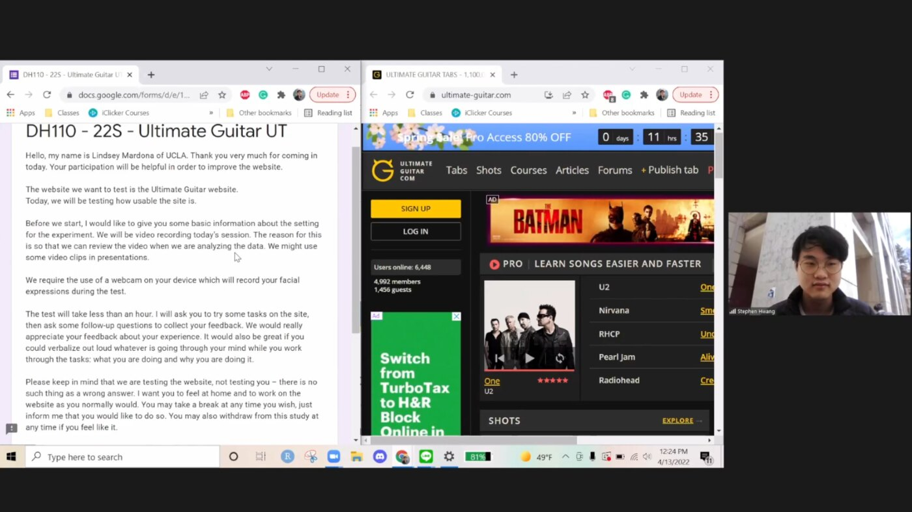
Materials: Moderator script & survey · Pilot UT recording · Field-study guide · Interview recording
Figuring out who I was designing for. I built two personas — with empathy maps, scenarios, and journey maps for each. Bradley is a moderately tech-comfortable beginner who wants to learn pieces and get better. Liam is an older, tech-averse gigging player who just wants lead sheets he can pull up fast. Designing for both ends — someone fluent with tech and someone actively frustrated by it — kept me honest about who really uses the site. From there I narrowed to two tasks: searching for a song and filtering it by difficulty and tab type, and finding and using the tutorial for the Shots feature.
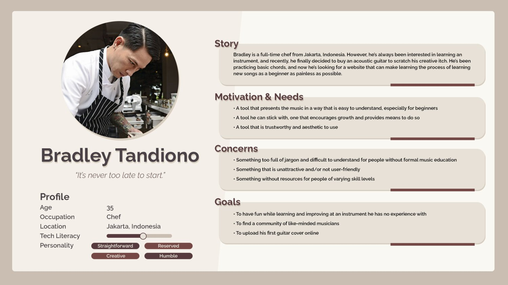
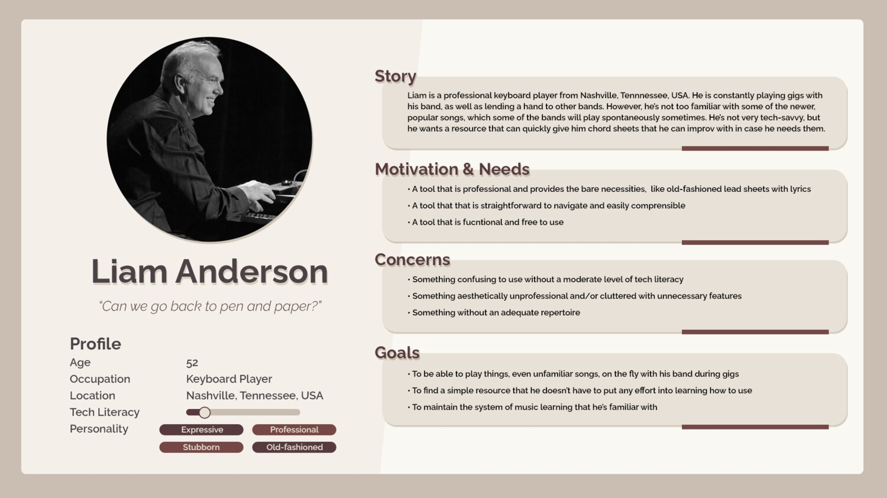
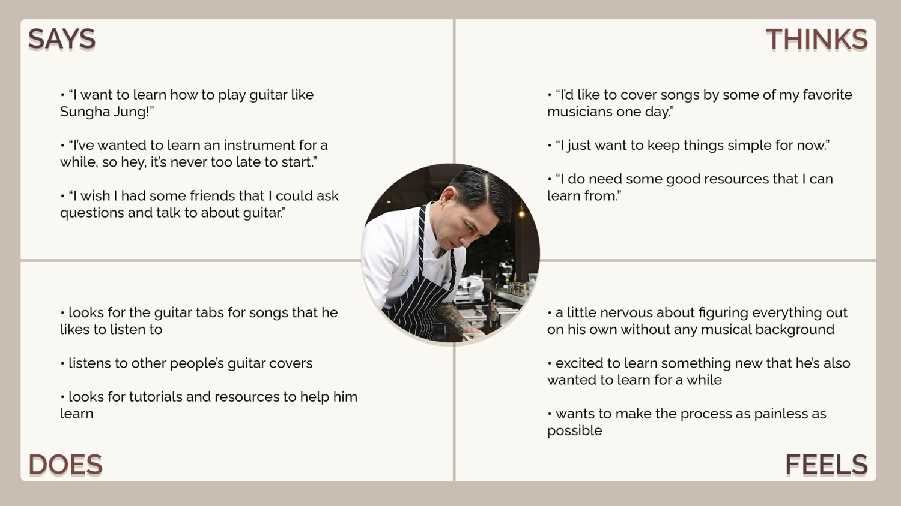
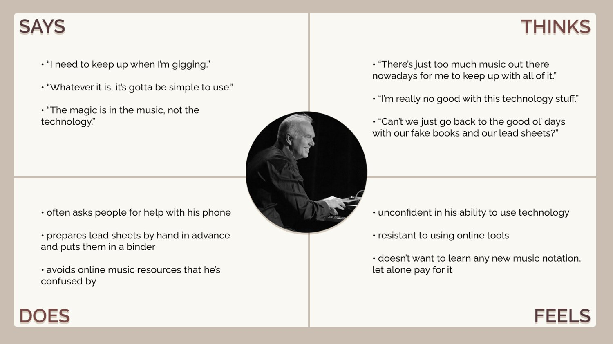
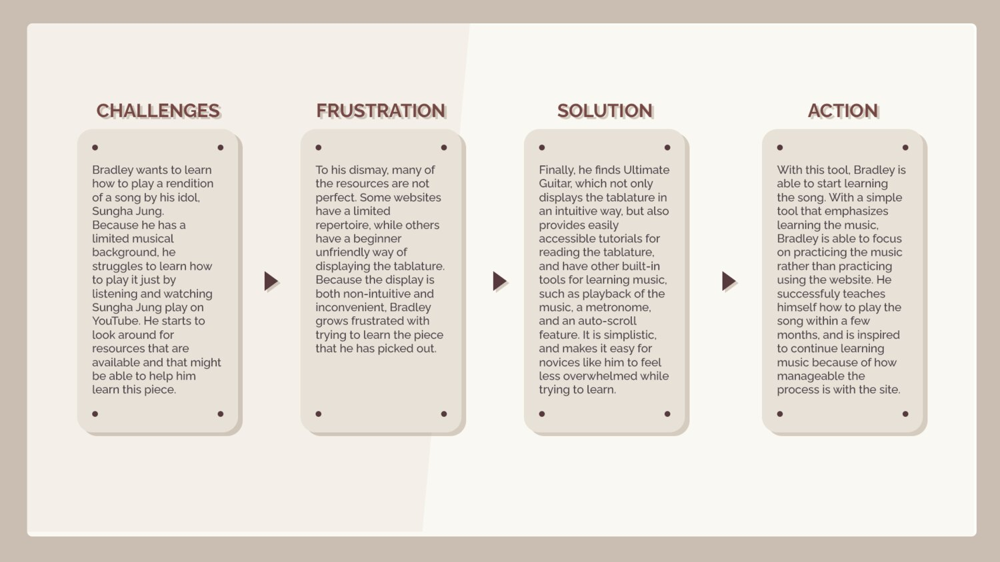
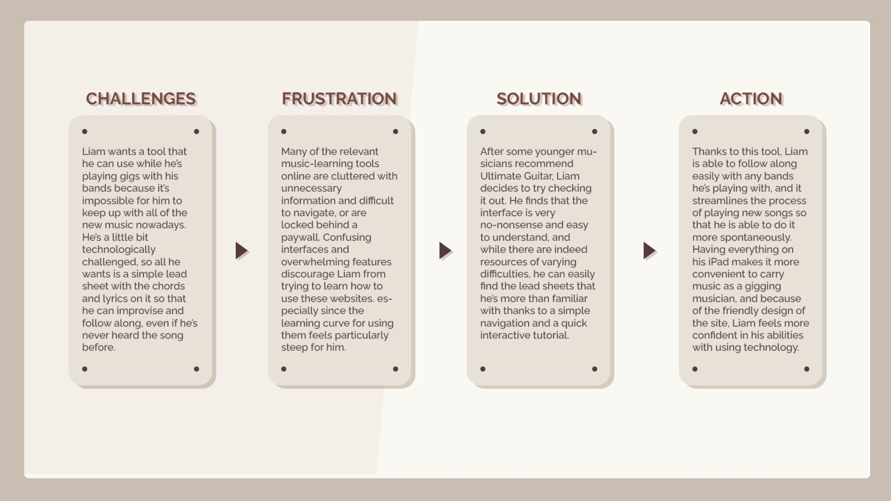
Designing it. I wireframed both tasks as low-fidelity flows first. Testing those flows caught missing pieces, so I added sorting and a way to close the tutorial partway through. Then I worked through the interface — visual directions, color-contrast checks for accessibility, and an impression test — and locked a color and type system before building a high-fidelity, interactive prototype in Figma.
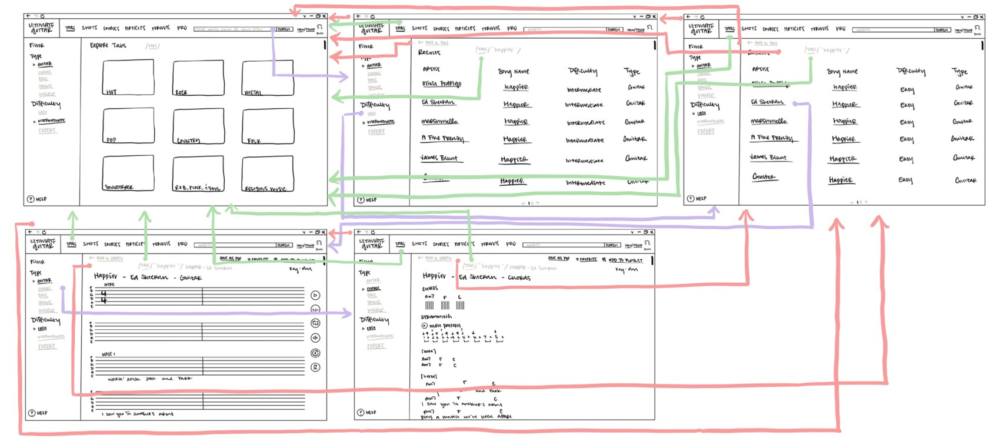
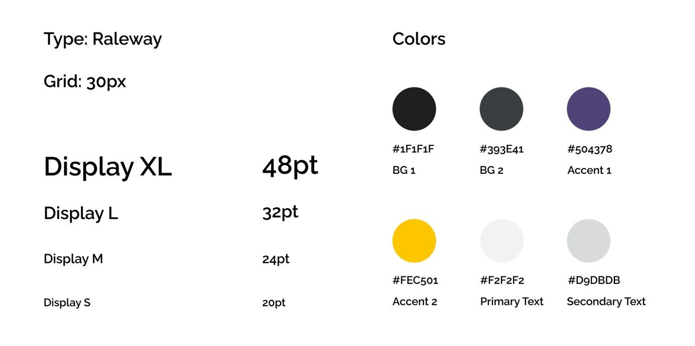
The test that didn't go to plan. I ran the hi-fi prototype through a peer cognitive walkthrough, but the reviewer didn't really understand what Ultimate Guitar was for, so their feedback wasn't usable and I didn't make changes off it. It was annoying at the time, but it taught me something I've kept since: who you recruit is part of the method. Testing with someone who doesn't match your user gets you noise, not signal.
Outcome
- A redesign grounded in a heuristic evaluation, a usability test, and a contextual inquiry, so the changes trace back to observed problems rather than taste.
- Two personas with journey maps that kept the design tied to real user types instead of a generic "user."
- A full progression from low-fidelity wireflows to an interface system to an interactive Figma prototype of the two core tasks.
- A pitch — a web document plus a recorded presentation — walking through the reasoning and demoing the prototype.
The two task flows I prototyped end to end:
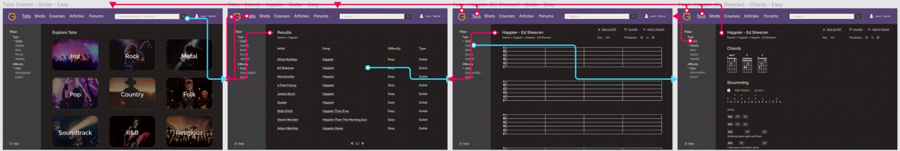
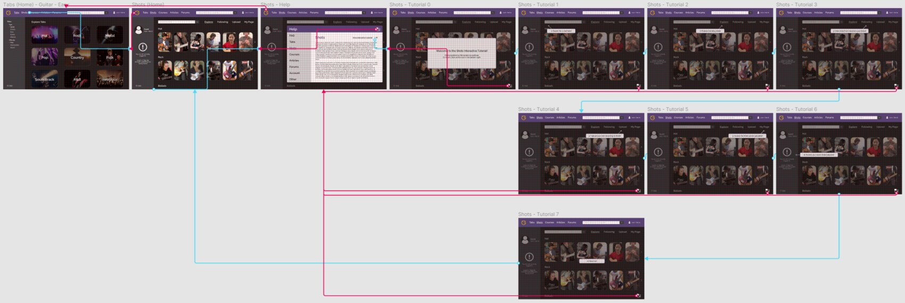
▶ try the interactive prototype ↗
Reflection
This was my first UX project from start to finish, and the part I actually value is the process. Running a heuristic evaluation, writing a moderator script and a survey, doing a pilot usability test and a contextual inquiry, building personas and journey maps, shipping my first real Figma prototype — that's where the terms stopped being a list and turned into methods I could actually run.
I'll be honest about the rest: looking back, I don't stand behind a lot of the specific design decisions or the polish of the final screens. It was four years ago and my first time doing any of this, and it shows. But that gap — between knowing the process and having the craft to execute it well — is exactly what the project taught me to see, and closing it is a lot of what I've been doing since.
The lessons that stuck weren't the tidy ones. Watching one person hunt for a difficulty rating that wasn't there told me more than the entire heuristic pass did. And the walkthrough that fell apart because I tested with the wrong person taught me that recruiting is part of the work, not an afterthought. It's a student project and a proposal, not a shipped product — but it's the first time I turned "this site is frustrating" into a specific, researched redesign, and it's why I kept going.
Materials: Full write-up · Pitch conclusions · Pitch video